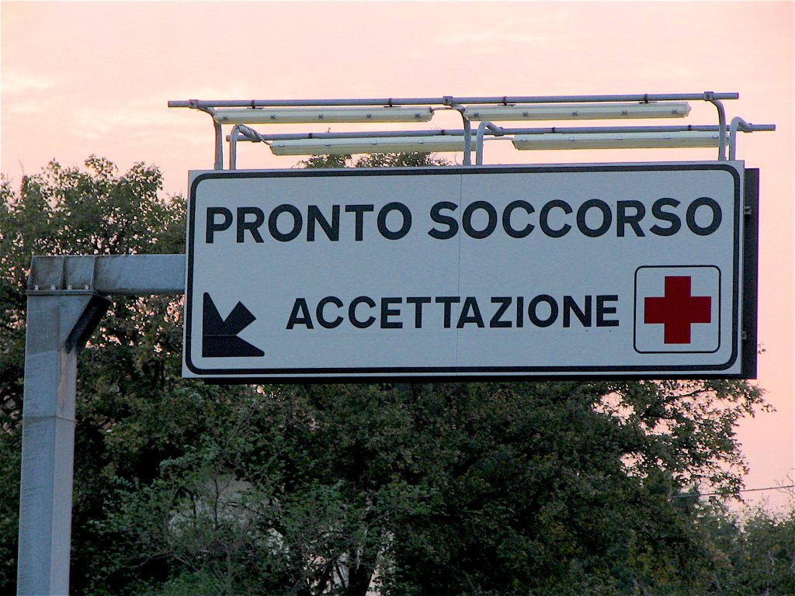

Pronto Soccorso (E.R.) sign
Italy doesn’t have any medical programs for non-EU citizens, and for this reason you are encouraged to purchase medical insurance coverage (assicurazione) in case an unfortunate event should require you to need medical assistance or hospitalization during your visit. That said, I’ve heard of many tourists that have been treated for free at some Hospitals’ Emergency Rooms. However, as an Italian living abroad, I’ve always paid. At the time of this writing, regular ER visits, with no hospitalization, are €50. As you can see, they are way more affordable than in the States. The Emergency Room is called Pronto Soccorso. Call the toll free number 112 in case of an emergency. As in the States, once you get there nurses will evaluate the seriousness of your problem and will give you a code (red code = most serious, white code = less serious). Expect a very long and tedious wait. If you consider your illness to be mild, you may want to check at a pharmacy first. {This is an excerpt from chapter 8 “Hospitals, Medical Assistance and Pharmacies” of the eBook “Italy from the Inside. A native Italian reveals the secrets of traveling in Italy”. Buy our eBook on Amazon and leave us a review! If it’s good, you’ll make us happy, if it’s bad, you’ll make us improve. Thank you either way!}